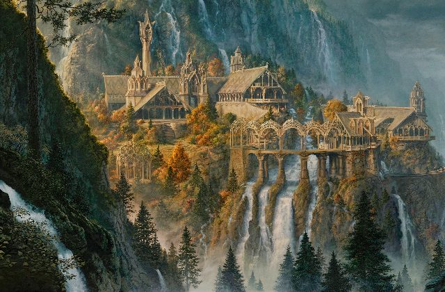
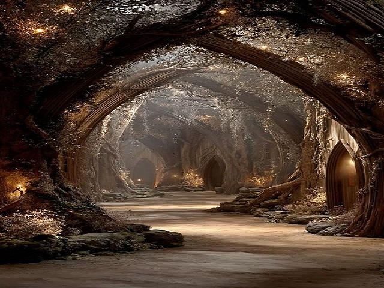

Völgyzugoly — a tündék rejtett menedéke
Középfölde egyik legvarázslatosabb és legbékésebb helye Völgyzugoly (tünde nevén Imladris, angolul Rivendell). Ez a titkos völgy a Szilánkos-hegység nyugati oldalán bújik meg, mélyen az erdők és hegyek ölelésében. Olyan hely, amelyet nehéz megtalálni annak, aki nem ismeri az utat — de aki egyszer eljut ide, örökre emlékezni fog rá.
A táj és hangulat
Völgyzugoly egy keskeny, zöldellő völgyben fekszik, ahol kristálytiszta patakok csörgedeznek, vízesések zuhognak alá a sziklákról, és hatalmas fák hajolnak a tünde épületek fölé. A levegő friss, az idő mintha lassabban telne, és minden a béke és harmónia érzését sugározza. A házak könnyed, ívelt formájúak, természetes anyagokból épültek, és tökéletesen illeszkednek a környezethez. Nincsenek éles sarkok vagy rideg falak — minden az élő természet szépségét követi.
Völgyzugoly urai — Elrond háza
Völgyzugoly ura Elrond, a bölcs féltünde, aki egyszerre emberi és tünde vérből származik. Házában évszázadok tudása és emlékezete él tovább. Elrond nemcsak vezető, hanem gyógyító, tanácsadó és a múlt őrzője is. Sokan keresik fel Völgyzugolyt:
- Vándorok, akik pihenésre vágynak
- Harcosok, akik tanácsot kérnek
- Tudósok, akik ősi történeteket kutatnak
A tündék zenéje és bölcsessége
Völgyzugoly estéin gyakran hallani tünde éneket és lantmuzsikát. A dalok ősi történeteket mesélnek a világ teremtéséről, hősökről és elveszett korokról. A tündék hosszú életük során felhalmozott tudása itt szinte tapintható a levegőben. Ez a hely emlékezteti az utazókat arra, hogy Középfölde nem csupán harc és veszély, hanem szépség, művészet és örökség is.
Egy időtlen menedék
Völgyzugoly a béke szigete a háború árnyékában. Olyan hely, ahol az ember (vagy hobbit) új erőre kaphat, mielőtt továbbindul a bizonytalan úton. Sokan mondják: aki egyszer megpihen Völgyzugolyban, annak szíve mindig visszavágyik oda.